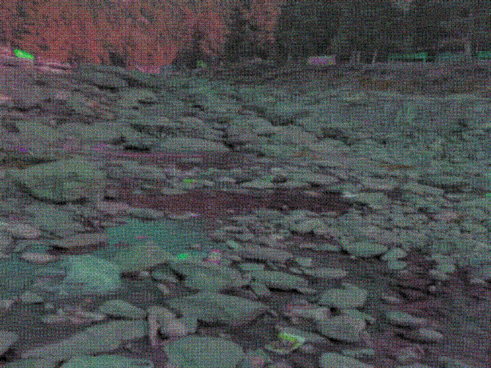

本报讯（记者 萌萌） 今日凌晨六时整，随着一声沉闷的爆破声，位于空景镇北山的昼湖洞穴入口被数千吨碎石彻底封堵。至此，这个自2280年发现以来便笼罩在神秘与争议中的地下湖，正式向外界关闭。镇政府在现场设置永久警戒线，并宣布任何组织或个人不得以任何理由接近或尝试重新开启洞穴。
此项决定由空景镇联合调查组在长达十五年的论证后作出。自2280年昼湖被发现以来，周边地区陆续发生多起人员失踪、离奇疾病及家畜消失事件，尤其以2285年地质工程师潮启明在书房中离奇死亡一案引发最大震动。尽管多次科学考察均未得出确定性结论，但逐年累积的异常现象使得镇民要求彻底封闭洞穴的呼声日益高涨。
爆破作业由省爆破工程公司实施，共使用十二个爆破点，将洞口上方岩体定向崩塌，最终填埋深度超过四十米。现场指挥的工程师表示，整个封闭结构将自然融入山体，预计数十年后植被恢复，洞穴入口将完全不可辨识。施工期间，北山周边三公里范围实施交通管制，未出现安全事故。

镇长在爆破后举行的简短记者会上表示：“这是无奈却必要的决定。二十年来，我们失去了六位居民，还有潮启明工程师这样的杰出科学工作者。昼湖的秘密或许永远无法解开，但保护活着的人更为重要。”他同时强调，镇政府将持续监测北山区域环境指标，确保封闭措施长期有效。
记者注意到，爆破结束后，许多镇民自发前往北山脚下静默站立。其中一位姓林的老人说：“潮启明走的那年，我就觉得那湖不该留着。现在封了，以后的孩子不用再担惊受怕了。”
随着爆破声消散，昼湖洞穴彻底归于沉寂。本报记者在洞口原址看到，原本幽深的溶洞入口已完全被岩石覆盖，周围拉起铁丝网，警示牌上写着：“地质危险，严禁入内。”
至此，空景镇长达二十年的昼湖风波，画上了句号。但对于那些失去亲人的家庭，以及潮启明工程师留下的未解之谜，或许真正的答案早已随湖水一起，永远埋在了山腹深处。